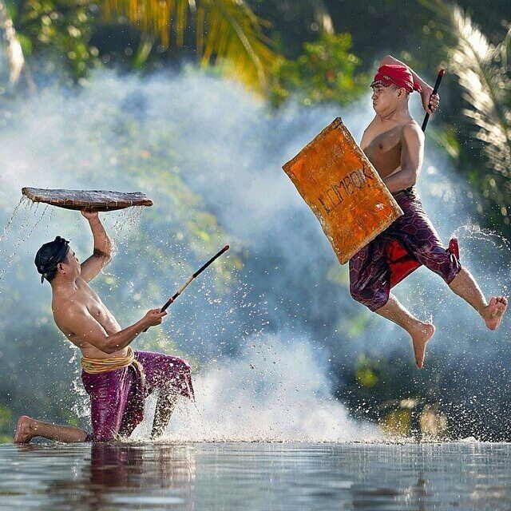

Peresean: Adu Ketangkasan Petarung Sasak

Sekilas Sejarah
Berasal dari Suku Sasak, Peresean adalah wujud pelampiasan emosi prajurit usai bertempur, sekaligus ritual adat memohon hujan. Ini adalah seni bela diri yang menggabungkan keberanian, teknik, dan sportivitas.
Alat & Persiapan
- Penjalin: Tongkat pemukul dari rotan yang kuat.
- Ende: Perisai tebal dari kulit sapi atau kerbau.
- Pakaian Adat: Pemain (*Pepadu*) menggunakan ikat kepala (*Sapuq*) dan sabuk, bertelanjang dada.
- Musik Pengiring: Gamelan Sasak untuk membakar semangat.
Cara Bermain
- Dua *Pepadu* (petarung) bersiap di arena, dibimbing oleh *Pekembar* (wasit).
- Saat gamelan dimainkan, pertarungan dimulai. Pemain saling memukul dengan rotan dan menangkis dengan perisai.
- Sasaran pukulan yang sah adalah punggung dan bahu. Dilarang memukul area di bawah perut.
- Pemenang ditentukan oleh jumlah pukulan yang masuk, atau jika salah satu petarung menyerah atau terluka (*bocor*).